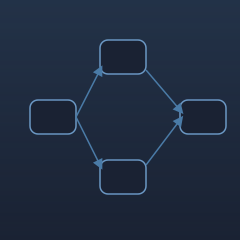

Playground
Ideas. Experiments. Curiosity.
Some experiments become products. Some become failures. Every one of them teaches me something worth carrying forward. Playground is where I learn in public.
-
2023
 Completed
CompletedLearning Deep Learning Through Malware Detection
Deep Learning for Malware ClassificationBuilt and benchmarked multiple deep learning models using a 200GB malware dataset to understand how different architectures perform in real-world classification tasks.
PythonTensorFlowCNNLSTMFNN- Feature engineering matters more than model complexity.
- CNN outperformed baseline models on image-like representations.
- Dataset quality directly impacted generalization.
-
2024
 Completed
CompletedCan Computer Vision Replace Manual Attendance?
Computer Vision AutomationBuilt a real-time attendance system using OpenCV and Django to automate classroom attendance.
PythonOpenCVDjangoSQL- Computer vision products depend more on environment than algorithms.
- Lighting and positioning dramatically affect accuracy.
-
2025
 In Progress
In ProgressUnderstanding LLM Reasoning Through Prompt Engineering
LLMs, Prompt Design, ReasoningExploring how different prompting strategies affect reasoning quality, consistency, and failure modes across large language models.
PythonLLM APIsPrompt DesignEvaluation- Structure in a prompt often matters more than length.
- Small wording changes can shift reasoning quality significantly.
- Evaluation frameworks matter as much as the prompts themselves.
-
2026

Always BuildingAutomating the Repetitive, One Workflow at a Time
Workflow AutomationBuilding small automation tools and scripts to remove repetitive manual work across research, documentation, and personal workflows.
PythonAPIsScripting- Small automations compound faster than expected.
- The best automation is the one that disappears into the workflow.
Currently Exploring
- MCP Servers
- AI Agents
- Product Analytics
- Recommendation Systems
- Multi-Agent Workflows
- System Design